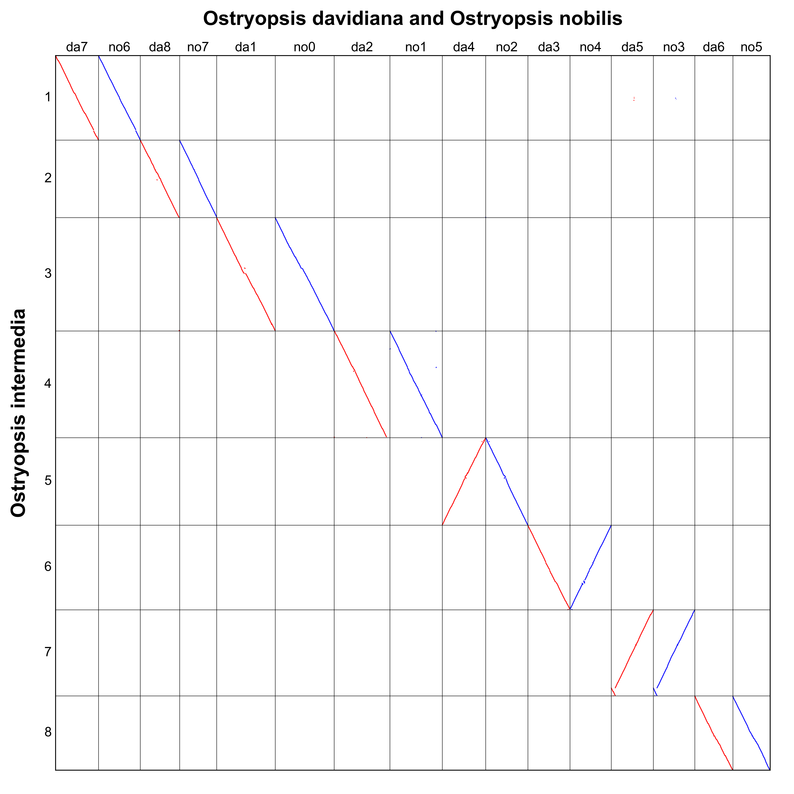

Alignment¶
Alignment of hierarchical and event-related gene collinearity.
Parameters
Parameters |
Standards and instructions |
blockinfo |
Type: file | Default: - Output result of parameter bi |
colors |
Type: { color1,color2,color3,– } Default: red,blue,green Set multiple sets of colors based on grouping, split with a comma. |
position |
Type: {order, start , end } | Default: order The position of the gene corresponds to the gff file. |
blockinfo_reverse |
Type: bool | Default: false The two species aligned swap positions.. |
figsize |
Type: int,int | Default: 10,10 Control the proportion of the size of the saved picture. |
savefile |
Type: file | Default: * .csv Result file. |
markersize |
Type: float | Default: 0.5 The size of the point in the plot. |
savefig |
Type: {*. png, *. pdf, *. svg} | Default: *. png Save pictures support png, pdf, svg formats. |
Use command to enter the folder wgdi -a ? > align.conf Take out the parameter file.
[alignment]
gff1 = gff1 file
gff2 = gff2 file
lens1 = lens1 file
lens2 = lens2 file
genome1_name = Genome1 name
genome2_name = Genome2 name
markersize = 0.5
position = order
colors = red,blue,green
figsize = 10,10
savefile = savefile(.csv)
savefig= save image
blockinfo = block information file
blockinfo_reverse = false
Quick start
After the parameters are modified properly, then run wgdi -a total.conf
Example
The original results are easily accessible at wgdi-example
